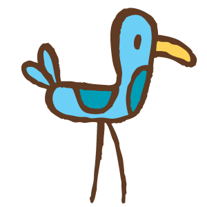

How it started ?
Passing by the administration department we saw a board
mentioning about a photography club at JEC in early 80's. On
further explorations we were astonished by its history since
many of the members are now professional photographers and
many working as freelancers! Seeing photography
enthuisats from our college we thought of reviving the Club.
To our surprise we got full support from each and every
person we asked help for.
Latest Event Captures
Classical Music Concert By Padmashri Pandit Vishwa Mohan Bhatt
Contact Us
To know more about our club or if you are
interested to join us contact us for forms
and other details at :
Phone
Follow Us
